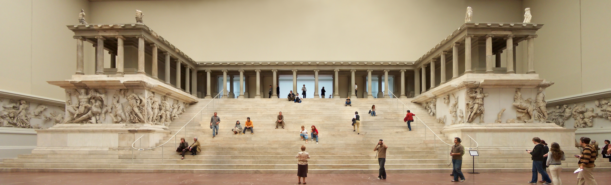

Pergamon
Scroll Down

The Pergamon Museum
The Pergamon Museum, located on Museum Island in Berlin, Germany, is one of the most significant
museums of ancient artifacts in the world. It was designed by Alfred Messel and Ludwig Hoffmann and
was constructed over a period from 1910 to 1930. The museum is named after the ancient Greek city of
Pergamon (now Bergama, Turkey), where a significant number of its pieces were excavated.
The Pergamon Museum is renowned for housing a vast collection of artifacts that span
thousands of years of human history, with particular focus on ancient civilizations from the Middle
East, including Greek, Roman, Babylonian, Persian, and Islamic art and architecture. It is part of
the Berlin State Museums, under the Prussian Cultural Heritage Foundation.
One of the most famous exhibits in the Pergamon Museum is the Pergamon Altar, a massive
structure dating back to the 2nd century BC, which features a frieze depicting the battle between
the Gods and Giants in Greek mythology. Another notable exhibit is the Ishtar Gate of Babylon, an
imposing glazed brick structure adorned with images of dragons and bulls, which dates back to the
reign of King Nebuchadnezzar II (605-562 BC).
The museum also contains the Market Gate of Miletus, an impressive Roman gate reconstructed
from the ruins found in Anatolia; the Mshatta Facade, a part of a 8th-century Jordanian desert
castle; and the Aleppo Room, which features intricately decorated wooden panels from a 17th-century
Syrian house.
Over the years, the Pergamon Museum has undergone several renovations and expansions to
accommodate its growing collection and to improve the visitor experience. It remains one of Berlin's
most visited and iconic cultural attractions, drawing millions of visitors from around the world
each year. The museum's collection offers invaluable insights into the ancient world, making it a
cornerstone for the study and appreciation of ancient cultures and civilizations.
Collections
Berlin
Diverse and Vibrant
Berlin, the capital city of Germany, is a vibrant metropolis known for its rich history, cultural
diversity, and significant contributions to art, politics, and science. Situated in the northeastern
part of the country, Berlin stands as a central hub of European politics, culture, and innovation.
The history of Berlin is a tapestry of momentous events and eras, from its establishment in the 13th
century to its role as the capital of the Margraviate of Brandenburg, the Kingdom of Prussia, the German
Empire, the Weimar Republic, and eventually, Nazi Germany. The city was infamously divided during the
Cold War by the Berlin Wall, which separated East and West Berlin from 1961 until its fall in 1989. This
division made Berlin a symbol of ideological conflict between the communist and capitalist worlds. The
reunification of Germany in 1990 reinstated Berlin as the country's capital, marking the beginning of a
new era of growth and reconciliation.
Modern Berlin is celebrated for its art scene, nightlife, and extensive array of museums and historical
sites. The city's architecture is a blend of historical buildings and modern structures, reflecting
Berlin's tumultuous history and its resurgence as a contemporary metropolis. Notable landmarks include
the Brandenburg Gate, the Reichstag Building, the Berlin Cathedral, and the remnants of the Berlin Wall,
particularly the East Side Gallery, which is adorned with political artworks.
Culturally, Berlin is home to the Berlin Philharmonic, one of the world's leading orchestras, and the
Berlinale, an annual film festival that is one of the most important events for the international film
industry. The city's Museum Island is a UNESCO World Heritage Site, hosting an ensemble of museums that
include the Pergamon Museum and the Altes Museum, which house treasures from antiquity to modern times.
Berlin is also recognized for its contributions to education and research, hosting several renowned
universities and research institutes. The city's diverse culinary scene reflects its multicultural
inhabitants, offering a wide range of global cuisines.
Despite its tumultuous past, Berlin has emerged as a city that epitomizes resilience and renewal. It is
a place where history and modernity coexist, creating a dynamic and welcoming environment for visitors
and residents alike.